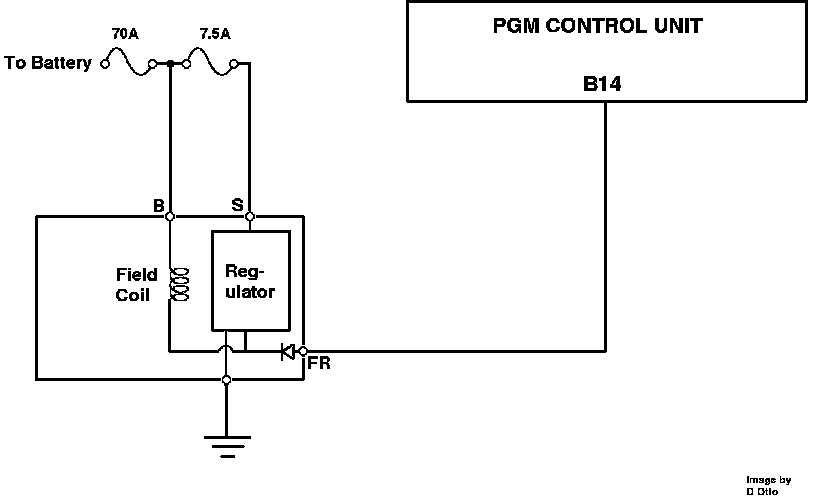

Alternator FR Signal
Alternator FR Signal:

The alternator FR signal is a field report signal. When the internal voltage regulator grounds the field coil in the alternator it also grounds terminal B14 at the ECU. The ECU uses this signal to modify idle control signals to insure a stable idle during electric load conditions (i.e.. air conditioning, headlamps).